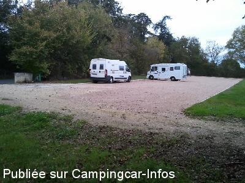
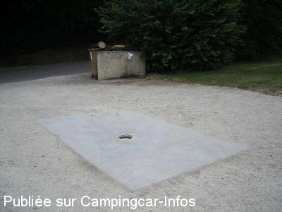

ASN = Aire de services avec stationnement nuit possible de :
SARRANT
(N° 758)
Accès/adresse :
Route de Solomiac
32120 SARRANT
32120 SARRANT
Latitude : (Nord) 43.77583° Décimaux ou 43° 46′ 32′′
Longitude : (Est) 0.92806° Décimaux ou 0° 55′ 41′′
Tarif : Gratuit
Services :


Petits commerces
Aire de pique-nique
Autres informations :
Ouvert toute l'année
Aire dans un pré, légèrement en pente
Tel + 33 (0)562 650 034

Le 01/11/2013 par jlemonnier

Le 10/07/2008 par FAROME 76
de
Jo 47
le 04/06/2015 :
Belle petite aire mais pas d'eau le 27 mai !
Belle petite aire mais pas d'eau le 27 mai !
de
Christian et Véronik
le 01/09/2014 :
Découverte par hasard le 31/08/2014.Calme,fort agréable adorable village médiéval et spectacle au pied de l'église! (organisé par la librairie tartinerie "des livres et vous"
Vraiment merci à la municipalité.
Découverte par hasard le 31/08/2014.Calme,fort agréable adorable village médiéval et spectacle au pied de l'église! (organisé par la librairie tartinerie "des livres et vous"
Vraiment merci à la municipalité.
de
Jérôme
le 01/11/2013 :
De passage en début novembre 2013. Magnifique village médiéval. L'aire camping car vient tout juste d'être aménagée au niveau du parking. Il y a maintenant un grand espace gravillonné pour 10-15 CC. Merci à la municipalité. Eau gratuite, et vidange eau grise, par contre rien pour les WC.
De passage en début novembre 2013. Magnifique village médiéval. L'aire camping car vient tout juste d'être aménagée au niveau du parking. Il y a maintenant un grand espace gravillonné pour 10-15 CC. Merci à la municipalité. Eau gratuite, et vidange eau grise, par contre rien pour les WC.
de
HERVE
le 16/04/2011 :
AVRIL 2011
aire très calme,dans un prés plutôt pentu ,joli village bon accueil, a recommander (mais ou faut-il vider les eau noires? )
AVRIL 2011
aire très calme,dans un prés plutôt pentu ,joli village bon accueil, a recommander (mais ou faut-il vider les eau noires? )
de
RFD 31
le 04/08/2009 :
Rien de particulier à ajouter aux commentaires précédents, sinon que le lieu est effectivement très calme, que le village de Sarrant vaut vraiment le détour et que "La Tarterie" (librairie-tarterie-café philosophique...) située à côté de l'église est particulièrement accueillante ! Ne pas manquer non plus la fête médiévale au mois d'août !
Rien de particulier à ajouter aux commentaires précédents, sinon que le lieu est effectivement très calme, que le village de Sarrant vaut vraiment le détour et que "La Tarterie" (librairie-tarterie-café philosophique...) située à côté de l'église est particulièrement accueillante ! Ne pas manquer non plus la fête médiévale au mois d'août !
de
Tacot
le 20/05/2008 :
De passage le week-end du 1er mai, aire toujours aussi calme, mais attention en cas de pluie, on s'embourbe facilement. Dans ce cas, prévoyez une assistance, car si vous comptez sur l'aide d'autres camping-caristes, vous risquez d'être bloqué longtemps. Eh oui, ces 10 dernières années les mentalités ont changé.
De passage le week-end du 1er mai, aire toujours aussi calme, mais attention en cas de pluie, on s'embourbe facilement. Dans ce cas, prévoyez une assistance, car si vous comptez sur l'aide d'autres camping-caristes, vous risquez d'être bloqué longtemps. Eh oui, ces 10 dernières années les mentalités ont changé.
de
Jacques PEYRICAL
le 27/11/2006 :
Le site dispose d'un robinet d'eau potable et au sol d'une aire de vidange des eaux grises (mais pas de vidange des eaux noires ni de branchement électrique). Ce site très calme, situé à une centaine de mètres d'un superbe petit village médiéval est constitué d'un pré en légère pente ce qui le rend difficilement utilisable par temps humide comme en ce jour.
Le site dispose d'un robinet d'eau potable et au sol d'une aire de vidange des eaux grises (mais pas de vidange des eaux noires ni de branchement électrique). Ce site très calme, situé à une centaine de mètres d'un superbe petit village médiéval est constitué d'un pré en légère pente ce qui le rend difficilement utilisable par temps humide comme en ce jour.